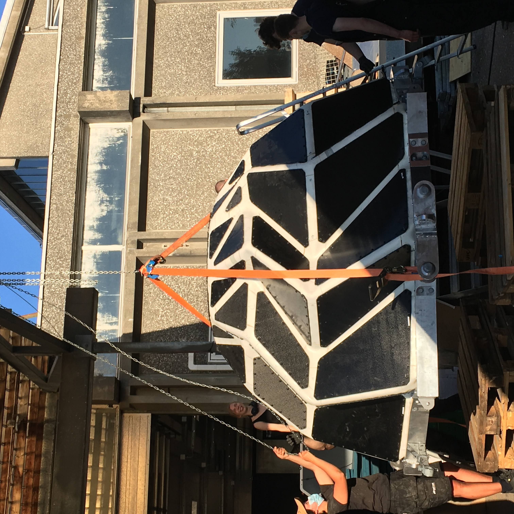
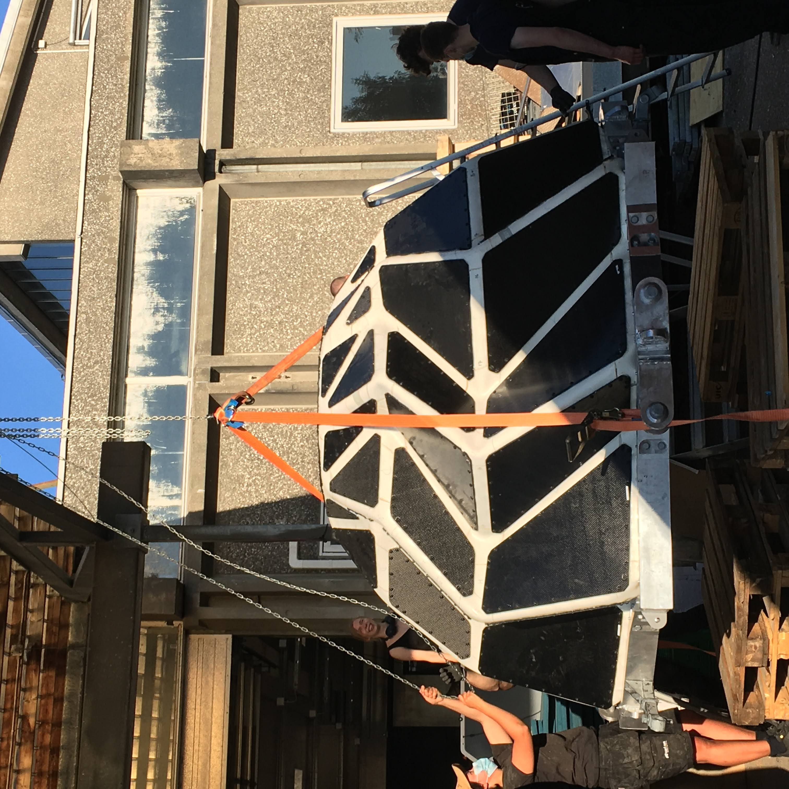

. Since then we've gone from pre-product, to being an essential tool for
carestaff across Europe.
. Since then we've gone from pre-product, to being an essential tool for
carestaff across Europe.
I'm an interaction designer who works across hardware and software. In
2021 I was hired as the founding designer at
Teton ↗︎
. Since then we've gone from pre-product, to being an essential tool for
carestaff across Europe.
At Teton, we're teaching computers to understand human activity in healthcare spaces, transforming this into tools that give carestaff agency in their work - like helping them to reduce falls by 83%. As the only designer and co-product lead, I've shaped everything from our digital products and branding to our industrial and service design. My ambition was to create a computer vision tool that still preserved dignity and privacy, right now this reflected in the increased work satisfaction we see from staff using Teton.
Usually I've been a 'build for yourself' kind of designer, so at Teton I had to find a way to make a product that was very much not for myself. The best approach I've found is just to be out with the carestaff a lot. I'll never end up being a nurse, but after 40 night shifts you get enough empathy to channel the 'build for yourself' way of working.
Previously:
• Designed
Sproute


 , a navigation app that mixes Street Fighter and Google Maps
, a navigation app that mixes Street Fighter and Google Maps
• Studied at
CIID ↗︎


• Helped
Jakob Wagner ↗︎


 to design B&O headphones, furniture, and healthtech hardware.
to design B&O headphones, furniture, and healthtech hardware.
• Designed the
Unpaid Intern


 a generative synthesiser for the industrial design process
a generative synthesiser for the industrial design process
• First class honors in product design from
Central Saint Martins ↗︎


Some smaller things:


 about AR prototyping, made during an art residency in Spokane
about AR prototyping, made during an art residency in Spokane


 , made with friends, using finetuned GPT2 and StyleGAN
, made with friends, using finetuned GPT2 and StyleGAN
 
, a moonbase they lived in in greenland

, a moonbase they lived in in greenland
• Wrote about design, technology, and art for
ICON magazine ↗︎


• Ran a small internet radio station out of my bedroom as a teenager